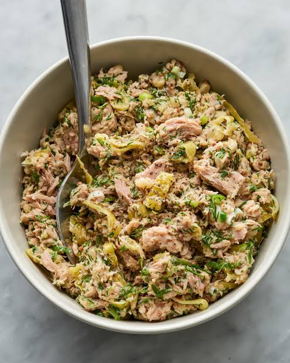

Give classic tuna salad abright meditterranean by adding pepperoncini,greek yogurt-mayo dressing , crumbles feta and lemon juice , Serve it as a dip with crackers and pita chips ,sandwiches ,protein-packed meal or snack
Stir tuna , pepperoncini, brine , red onion , parsly , feta , lemon juice , greek yogurt , balsamic vinegar , mayonnaise , dill , salt and pepper together in a bowl until well combined
Cover and refrigerate at least 30 minutes or until ready to serve.